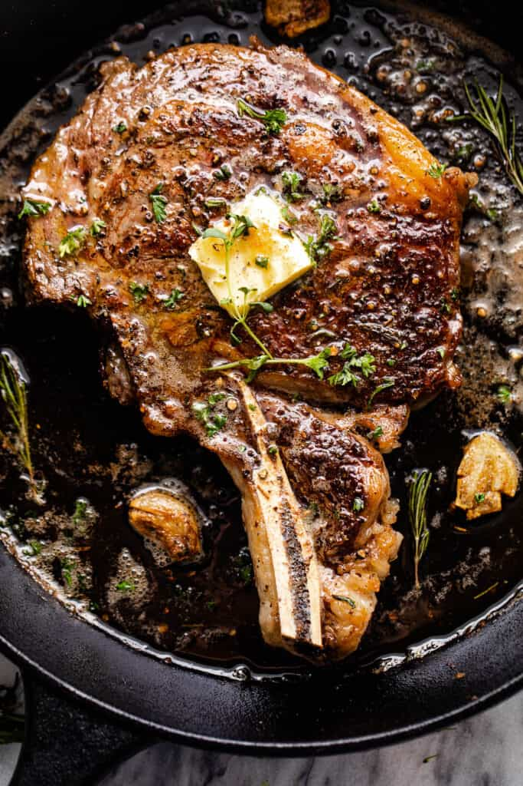

Home
Ribeye Steak Recipe

Pan Frying a Juicey Ribeye Steak
The method I typically use to pan fry a steak. A simple recipe, but a good ribeye doesnt need much help.
Results in a medium steak.
Ingredients
- Ribeye steak
- Salt
- Pepper
- 1 Tablespoon Butter
- olive oil
Directions
- Rub steak generously with salt and pepper
- Heat pan on medium high
- Add oil once heated
- Add butter
- Place steak into center of pan and let sit for 5 minutes
- Flip steak and heat for 5 minutes, spooning melted butter onto the crust from the pan
- Remove steak from pan and check internal temp for safety
- Enjoy!